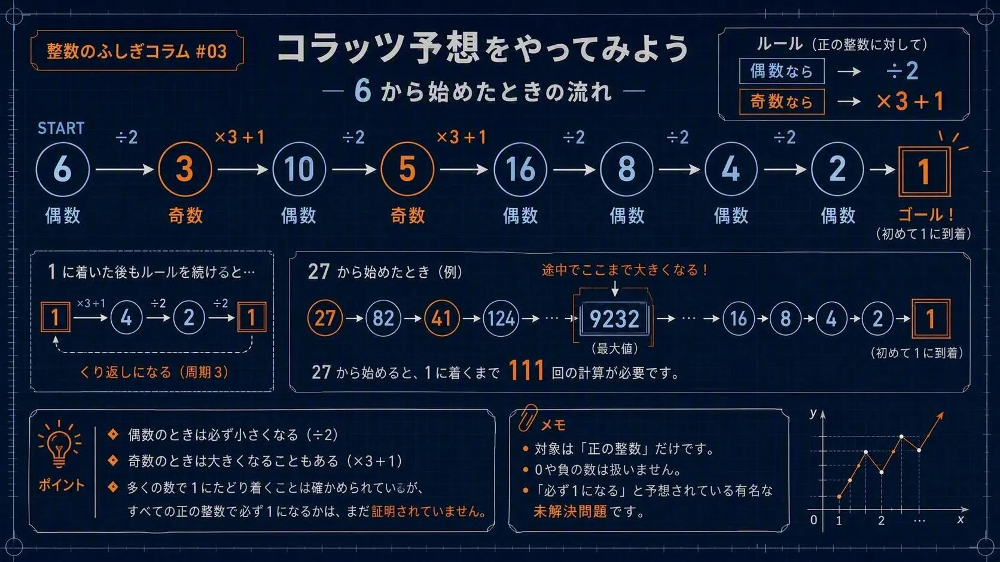

まずは計算してみる
使うルールは2つだけだ。偶数なら2で割り、奇数なら3倍して1を足す。例として「6」から始めてみよう。
| 6 ÷ 2 = | 3 |
| 3 × 3 + 1 = | 10 |
| 10 ÷ 2 = | 5 |
| 5 × 3 + 1 = | 16 |
| 16 ÷ 2 = | 8 |
| 8 ÷ 2 = | 4 |
| 4 ÷ 2 = | 2 |
| 2 ÷ 2 = | 1 |
6から始めると、8回の計算で1に到着した。数の流れをまとめると、次のようになる。
6 → 3 → 10 → 5 → 16 → 8 → 4 → 2 → 1
3、7、10から始めて、1になるまで計算してみよう。「計算回数」「途中で最も大きくなった数」「出発した数より大きくなったか」も記録してみよう。

1に着いた後はどうなる？
1に着いた後も同じルールを続けると、1 → 4 → 2 → 1となり、この3つの数を繰り返す。この記事では、最初に1へ着いたところで終了とする。
途中で大きくなることもある
「最後は1になるなら、少しずつ小さくなる」と思うかもしれない。しかし、7から始めると、7 → 22 → 11 → 34 → 17 → 52となり、出発した7よりずっと大きくなる。
さらに27から始めると、1に着くまでに111回の計算が必要で、途中では9232まで大きくなる。
27 → 82 → 41 → 124 → … → 9232 → … → 16 → 8 → 4 → 2 → 1
どうしてそうなるのか
偶数のときは2で割るので数は小さくなる。奇数のときは3倍して1を足すので数は大きくなる。ただし、奇数を3倍すると奇数で、そこに1を足すと偶数になる。つまり、奇数の次には必ず偶数が現れる。
非常に多くの正の整数で1に着くことが確認されている。しかし、正の整数は無限にある。どれだけ多くの例を調べても、それだけでは「すべての正の整数で必ず1になる」と証明したことにはならない。
高校数学や大学入試とのつながり
数学Aでは、整数kを使って、偶数を2k、奇数を2k + 1と表す。奇数にコラッツ予想の計算をすると、
3(2k + 1) + 1 = 6k + 4 = 2(3k + 2)
最後は2を掛けた形なので、結果は必ず偶数になる。大学入試の整数問題でも、偶数と奇数の場合分け、余りへの注目、文字を使った説明、反例の確認などが重要になる。
ただし、この計算で分かるのは「奇数の次は偶数になる」ということまでだ。これだけでコラッツ予想全体を証明できるわけではない。
コンピューターで確かめても証明ではない？
同じ計算を何度も繰り返すのはコンピューターが得意だ。コラッツ予想も非常に大きな範囲まで確認されている。それでも、その先にある無限個の正の整数を一度に説明したことにはならない。
途中で永遠に大きくなり続ける数はないのか。1以外の繰り返しに入る数はないのか。簡単なルールなのに、なぜ証明は難しいのだろう。
計算のルールが簡単だからといって、答えも簡単とは限らない。自分で試せる問題のすぐ先に、まだ誰も解決していない数学がある。